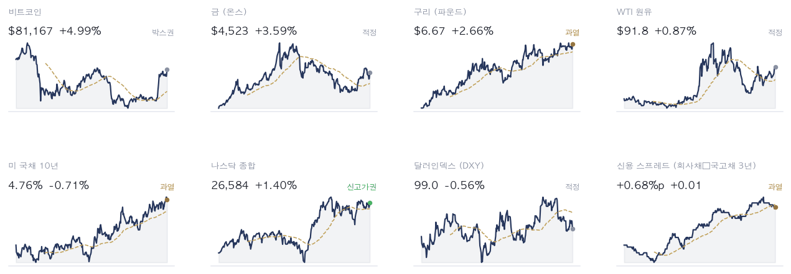
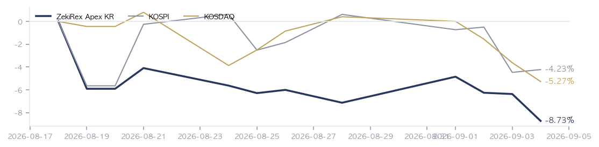

|
ZekiRex™ Apex KR — 2026년 9월 4일
오늘의 판단 · 1/2
데이터 기준 9/3 (KST) 종가 · 간밤 뉴욕 9/3 종가(현지시간) |
ZekiRex™ |
|
|
|
THE REX CALL
9/3 서울에서 지수는 올랐지만 오른 것은 은행·건설·해운이었고, 같은 날 뉴욕 마감에서는 동결 신호에 금리가 물러섰습니다.
매수도 매도도 하지 않았습니다. 통과한 13개 가운데 여덟은 자리가 없어, 둘은 이미 보유하고 있어 넘겼고, 셋은 품질 하한에서 걸렀습니다.
오늘 반드시 알아야 할 것
1. 뉴욕 9/3 종가(현지시간)에서 다우가 1.18%, S&P 500이 1.06%, 나스닥이 1.40% 올라 3대 지수가 모두 1% 넘게 마감했습니다. 이데일리는 월러 이사가 물가 둔화가 이어지면 9월 동결을 지지하겠다고 말했고 9월 인상 확률이 50%로 내려갔다고 전했습니다. 2. 9/3 서울 종가는 갈렸습니다. 코스피는 0.26% 오른 6,579인데 코스닥은 1.71% 내린 790으로 앞자리가 7로 내려왔습니다. 지수가 오른 날에도 중소형주가 밀렸다는 것은, 오른 것이 시장 전체가 아니라 일부 업종이었다는 뜻입니다. 3. 원/달러는 1,350원대입니다. 동아일보는 이 수준이 석 달 만이며 그동안 200원이 낮아졌다고 전했습니다. 수입 원가를 낮추는 통화 강세는 정유와 화학의 원가에 먼저 닿습니다. 4. CNBC는 이란이 쿠웨이트를 향해 미사일을 쏜 뒤에도 유가가 거의 변하지 않았고 주간으로는 미국산 원유가 9% 올랐다고 전했습니다. 하루의 사건보다 정제 물량이 값을 만들고 있다는 뜻이며, 확인할 곳은 경유와 휘발유의 가격 차이입니다. 5. 연합뉴스와 동아일보는 산업통상자원부 장관이 미국 반도체 관세를 불리하지 않은 대우라는 전제로 협의하고 있으며 대미 투자 1호를 이달 안에 마무리하겠다고 밝혔다고 전했습니다.
| |
|
최근 10거래일 국면 추이 (왼쪽이 과거) 방향 — 어디까지 왔나. 국면은 7개 조건으로 판정합니다. 코스피는 6개를 통과해 한 칸이 모자랍니다 — 장기 구조는 온전합니다. 코스닥은 1개만 통과했고 장기 구조가 깨져 있습니다. 승격은 3세션 연속 확인을 요구하고 강등은 같은 세션에 반영합니다. 늦게 들어가는 비용은 기회이고 늦게 나오는 비용은 원금이기 때문입니다. 다만 국면은 진입을 막지 않습니다 — 공표하되 구속하지 않습니다.
| |
| 오늘의 조치 |
| 오늘 신규 매매 없음. 규칙이 요구하지 않는 날에 거래하지 않는 것도 하나의 결정입니다. |
|
| 종목 | 비중 | 현재가 | 손절가 | 여유 | 다음 이벤트 | | 타이거일렉 | 24% | ₩60,200 | ₩59,156 | +1.8% | — | | 샘씨엔에스 | 26% | ₩13,040 | ₩11,850 | +10.0% | — | | GS | 26% | ₩118,900 | ₩106,904 | +11.2% | — | | 한국콜마 | 23% | ₩150,600 | ₩134,136 | +12.3% | — |
|
| 보유 종목 소식 — 오늘 |
| 타이거일렉 | 섹터 근거 — 같은 코스닥 하락 안에서 반도체 기판·소재 업종이 지수보다 더 밀렸습니다. — Maeil Business · Yonhap 2026-09-03 15:48 KST | | 샘씨엔에스 | 섹터 근거 — 코스닥이 1.71% 내린 790.21로 800선을 반납했고 반도체 기판·소재주가 약세였습니다. — Maeil Business · Yonhap 2026-09-03 15:48 KST | | GS | 섹터 근거 — 유럽 연료난에 한국산 경유 9만톤이 서유럽으로 향한다는 보도가 나왔습니다. — Money Today · Edaily (citing Bloomberg) 2026-09-03 15:48 KST | | 한국콜마 | 섹터 근거 — 한국콜마를 3종목 중 하나로 담은 화장품 ETF가 1개월 수익률 47.3%로 전체 1위를 기록했습니다. — Yonhap · Money Today 2026-09-02 10:04 KST |
|
| 관문을 통과한 종목 — 자리가 없어 담지 못한 이름들 |
| 금융 4 | | 001450 현대해상 | RS 92 | ₩53,500 | | 055550 신한지주 | RS 82 | ₩114,500 | | 086790 하나금융지주 | RS 82 | ₩139,500 | | 105560 KB금융 | RS 81 | ₩177,900 | | 소비 3 | | 192820 코스맥스 | RS 92 | ₩282,000 | | 278470 에이피알 | RS 91 | ₩406,000 | | 073240 금호타이어 | RS 87 | ₩7,120 | | 산업재·인프라 2 | | 317400 자이에스앤디 | RS 98 | ₩11,240 | | 028670 팬오션 | RS 80 | ₩5,940 | | 반도체·하드웨어 1 | | 119850 지엔씨에너지 | RS 94 | ₩41,850 | | 기타 1 | | 089860 롯데렌탈 | RS 89 | ₩50,400 |
|
왜 못 담았나. 자리는 넷뿐이고 각 자리에 총자산 25%가 들어갑니다 — 한 종목이 −8%에 걸려도 계좌 전체로는 2% 손실이 되도록 맞춘 구조입니다. 자리를 비우는 길은 손절과 오실레이터 이탈 둘뿐이라, 더 좋은 후보가 나와도 갈아타지 않습니다.
이 목록이 뜻하는 것. 13개가 조건을 통과했고 그중 보유 중인 종목을 뺀 11개가 대기 중입니다. RS는 80~98입니다. 우리 4자리는 반도체·하드웨어 2, 에너지·정유 1로 나뉘어 있고 가장 큰 쪽이 반도체·하드웨어입니다 — 그래서 하루 등락이 지수와 평균 2.2%p 벌어졌고, 가장 크게 갈린 8/28 세션에는 코스피 보다 3.6%p 더 내렸습니다. (업종 미확인 1종목 제외) 자리가 하나 열리면 이 순서의 맨 위부터 검토합니다. 매수 추천이 아닙니다. |
조건은 통과했지만 품질 하한에서 걸린 종목 | 에이피알 278470 — 품질 하한 미달 | | 롯데렌탈 089860 — 재무 등급 SMR E — 품질 하한 미달 | | 금호타이어 073240 — 품질 하한 미달 |
|
| 핵심 지표 |
코스피 6,579 +0.26% · 고점 −27.8% 0.26% 올라 6,579입니다. 7개 조건 중 6개를 통과해 한 칸이 모자라고 장기 구조는 온전합니다. 오른 것은 지수이고 오른 업종은 금융과 건설이었으므로, 지수 상승을 시장 전체의 회복으로 읽으면 안 됩니다. 박스권 | 코스닥 790 -1.71% · 고점 −35.6% 1.71% 내린 790으로 앞자리가 7로 내려왔습니다. 7개 조건 중 1개만 통과했고 장기 구조가 깨져 있습니다. 지수가 오른 날에도 내렸다는 것은 중소형주에서 돈이 계속 빠지고 있다는 뜻입니다. 하단권 | 원/달러 ₩1,358.50 1,350원대로 내려왔습니다. 동아일보는 이 수준이 석 달 만이라고 전했습니다. 수입 원가에는 이득이고 수출 대금의 원화 환산에는 손해이므로, 정유·화학과 수출 제조업의 방향이 여기서 갈립니다. 과매도 | 국고채 3년 3.88% 3.88%로 5bp 낮아졌습니다. 회사채 3년물은 4.56%입니다. 금리가 내렸는데도 코스닥이 밀렸으므로, 서울의 중소형주를 누른 것은 할인율이 아니라 수급이라고 읽어야 합니다. 과열 | S&P 500 7,748 과열 | 포트폴리오 -8.73% 현금 0% · 보유 4종목 설정 이후 |
|
| 한 줄 정리: 금리 인상 위험이 뒤로 밀린 하루였고, 서울은 그 방향을 지수에서만 받았습니다. 코스피는 0.26% 올랐지만 코스닥은 1.71% 내렸고, 오른 쪽은 은행과 건설과 해운이었습니다. 상대강도 순위에서도 석유와가스가 1위, 생명보험이 2위입니다. 금리에 민감한 이익을 가진 업종으로 돈이 모였고, 그렇지 않은 중소형주는 지수가 오른 날에도 밀렸습니다. |
|
|
|
판단의 근거 · 2/2
데이터 기준 9/3 (KST) 종가 · 간밤 뉴욕 9/3 종가(현지시간) |
ZekiRex™ |
|
|
| 오늘 반드시 알아야 할 것 |
|
인상 위험이 물러선 하루, 서울에서 오른 것은 지수이지 종목이 아니었습니다
뉴욕 9/3 종가(현지시간)에서 다우 1.18%, S&P 500 1.06%, 나스닥 1.40%가 함께 올랐고 미 국채 10년물은 4.76%로 낮아졌습니다. 달러가 약해지는 동안 금과 구리 같은 실물자산도 함께 올랐습니다. 주식과 채권과 실물이 같은 날 함께 오르는 것은 어느 한 종목의 재료가 아니라 할인율이 내려갔다는 신호입니다. 그 전에 닫힌 9/3 서울 종가는 코스피 0.26% 상승, 코스닥 1.71% 하락으로 갈렸습니다. 왜 그런가. 어긋나는 자리가 여기입니다. 국고채 3년물이 3.88%로 5bp 낮아졌는데도 코스닥은 790까지 내렸습니다. 금리가 내려가면 성장주가 먼저 숨을 돌린다는 설명과 맞지 않습니다. 서울에서 값이 오른 쪽은 금융과 건설과 해운이었고, 이데일리는 외국인이 5거래일 동안 4조7000억원을 순매도했다고 전했습니다. 금리가 아니라 수급이 지수 안쪽을 갈랐다는 쪽이 그날의 값과 맞습니다. 다음에 무엇이. 다음에 볼 것은 9월 인상 확률 50%가 어느 쪽으로 정리되는지입니다. 동결로 굳으면 지금 밀린 중소형주가 먼저 돌아오고, 인상으로 기울면 9/3에 오른 은행과 정유가 자리를 지킵니다.
보도 대 우리 데이터 | Edaily 월러 이사 9월 동결 지지 시사, 인상 확률 50% → 우리 화면도 같은 쪽입니다 — 616종목 중 통과한 13개 가운데 넷이 금융이고, 손해보험이 업종 4위, 은행이 8위입니다. | | Chosun Ilbo 경유 강세에 국내 정유사 반사이익 → 우리 계산도 같습니다 — 석유와가스가 업종 1위이고 평균 상대강도 90.0입니다. 다만 9/3 하루 GS 종가는 ₩118,900으로 내렸습니다. | | Edaily 외국인 5거래일 4조7000억원 순매도 → 우리 화면과 어긋납니다 — 반도체와반도체장비는 업종 3위를 그대로 지켰습니다. 수급이 빠지는 것과 상대강도가 꺾이는 것은 아직 같은 일이 아닙니다. |
그래서 우리는: 수출 제조업 종목을 들고 계신 독자라면 두 가지를 함께 보셔야 합니다. 1,350원대의 원/달러는 수입 원가를 낮추지만 수출 대금의 원화 환산액도 함께 줄입니다. 정유와 화학은 앞의 이득이 크고, 반도체 부품과 화장품 제조는 뒤의 손실이 먼저 옵니다. 반대편도 적어 둡니다. 9월 인상이 되살아나 환율이 되돌아가면 지금 밀린 중소형주가 먼저 회복될 자리에 있고, 반대로 지금 오른 은행과 정유는 금리 하락이 이어지면 이익 전망이 줄어듭니다.
Rex Lens™
| |
| 그 밖에 알아야 할 것 |
| 비공개로 열리는 테슬라 사이버캡 행사 · 인베스터스비즈니스데일리는 테슬라의 사이버캡 공개 행사가 비공개로 열린다고 전했고, 머니투데이는 기대감에 주가가 5.4% 올랐다고 보도했습니다. (Investor's Business Daily · Money Today) → 비공개 행사에서 나온 내용이 양산 일정으로 확인되는지, 시연에 머무는지 봅니다. | | 네덜란드 중앙은행의 미국 내 금 보유 축소 · 뉴욕타임스는 네덜란드 중앙은행이 지정학적 불안을 이유로 미국에 두었던 금 보유를 줄인다고 전했습니다. 이전 일정과 최종 보관처는 아직 공개되지 않았습니다. (New York Times) → 다른 중앙은행이 같은 결정을 따라가는지, 그것이 금 현물 수요로 나타나는지 봅니다. | | 앤트로픽 기업공개를 둘러싼 셈법 · 뉴욕타임스는 앤트로픽의 기업공개에서 어느 투자자가 큰 이익을 가져갈지 따져봤습니다. 상장 시점과 조건은 아직 정해지지 않았습니다. (New York Times) → 비상장 인공지능 기업의 몸값이 공모 시장에서 확인되는지, 그 결과가 관련 종목에 어떻게 옮겨붙는지 봅니다. | | 한국은행 새 총재의 신중 기조 · 한경글로벌마켓은 새로 취임한 한국은행 총재가 신중한 정책 기조와 금융안정 역할 확대를 예고했다고 전했습니다. 첫 결정은 다음 회의에서 나옵니다. (KED Global) → 안정을 앞세운 기조가 가계부채 규제로 먼저 나타나는지 봅니다. | | 공공기관 524곳 가운데 109곳의 통폐합 · 동아일보는 정부가 공공기관 524곳 가운데 109곳을 없애는 개편안을 내놨다고 전했습니다. 실제 통폐합은 앞으로 진행됩니다. (Dong-A Ilbo) → 개편이 공공 발주 물량과 기관채 발행 계획을 얼마나 바꾸는지 봅니다. |
|
한국과 미국을 잇는 것: 뉴욕에서 서울로 넘어오는 것은 두 갈래입니다. 하나는 물러선 미 국채 금리이고, 이것은 서울의 할인율을 눌러 왔던 바로 그 힘이라 인상 위험이 접히면 성장주가 먼저 숨을 돌립니다. 다른 하나는 유가인데, 금리와 무관하게 수입 원가로 들어와 통화 강세가 주는 완충을 갉아먹습니다. 9/4 서울 개장이 마주하는 것은 지수의 방향이 아니라, 9/3에 값이 확인해 준 정유와 금융이 그 자리를 지키는지입니다. |
 Rex Pulse™ — 지수·가상자산 / 통화 / 원자재 / 채권 16종, 1년 추이와 50일 이동평균(점선) · 기준 한국 9/3 종가, 뉴욕 9/3 종가(현지시간) |
국면은 빨강이고 코스피는 노랑, 코스닥은 빨강입니다. 네 칸이 모두 차 있어 이번 판의 매매는 없습니다. 행동이 없다는 것이 판단을 미룬 것은 아닙니다. 규칙은 자리가 있을 때만 사고 조건이 깨질 때만 파는데, 9/3 서울 종가 기준으로 어느 쪽도 해당하지 않았습니다. 다만 국면은 진입을 막지 않습니다. 위험 관리는 종목마다 걸린 −8% 손절 하나로만 이루어집니다. 그래서 봐야 할 것은 국면의 색이 아니라 종목마다 손절가까지 남은 거리이고, 그 거리가 가장 짧은 종목이 다음 판의 위험을 정합니다. |
| 리더십 — 업종 강세 순위 |
강세 상위 | 업종 | 강도 / 자금 | 차이 | | 01 | 석유와가스 | | +42 | | 02 | 반도체와반도체장비 | | +29 | | 03 | 손해보험 | | -10 | | 04 | 건설 +3 | | -6 | | 05 | 전자장비와기기 -1 | | +38 | | 06 | 화장품 -3 | | -25 |
| 약세 하위 | 업종 | 강도 / 자금 | 차이 | | 01 | 생물공학 -3 | | -19 | | 02 | 조선 | | -27 | | 03 | 호텔,레스토랑,레저 +1 | | -52 | | 04 | 건강관리장비와용품 -7 | | -7 | | 05 | 게임엔터테인먼트 +1 | | +10 |
|
|
| 업종을 9/3 서울 종가 기준 강세 순으로 줄 세운 뒤 위 다섯과 아래 다섯을 실었고, 본문이 지목했거나 보유 중인 업종을 더했습니다. 1위와 2위는 석유와가스와 생명보험이고 둘 다 평균 상대강도 90.0입니다. 4위 손해보험, 5위 건설, 8위 은행이 그 뒤를 잇습니다. 다섯 모두 금리가 오르거나 유가가 오를 때 이익이 늘어나는 쪽이고, 반대편인 건강관리업체및서비스와 생명과학도구및서비스와 생물공학은 맨 아래에 모여 있습니다. 여기서 나오는 것은 하나입니다 — 서울에서 강한 자리가 좁아졌고, 그 좁은 자리의 성격이 성장이 아니라 이자와 원자재라는 것입니다. 그래서 봐야 할 것은 지수의 방향이 아니라 이 배열이 유지되는지이며, 상위 업종이 무너지기 시작하면 지수가 올라도 시장은 더 좁아집니다. |
| Rex 25™ — 당일 등락률 전체 순위 |
| 01 317400 자이에스앤디+10.74% | | 02 028670 팬오션+7.80% | | 03 105560 KB금융+5.20% | | 04 055550 신한지주+3.62% | | 05 086790 하나금융지주+3.41% | | 06 001450 현대해상+2.10% | | 07 119850 지엔씨에너지+0.00% | | 08 073240 금호타이어-0.14% | | 09 089860 롯데렌탈-0.20% | | 10 ● 078930 GS-0.92% | | 11 192820 코스맥스-1.23% | | 12 278470 에이피알-3.10% | | 13 ● 252990 샘씨엔에스-3.62% |
|
616종목 중 13개가 통과했고, 하루 전 14개에서 하나가 줄었습니다. 빠진 것은 달바글로벌이고 이익 성장 관문에서 걸렸습니다. 통과한 13개 중 셋은 품질 하한에서 제외했습니다 — 에이피알 종합 64, 금호타이어 67, 롯데렌탈은 재무 등급 E에 종합 53입니다. 남은 열 개를 종합 점수로 줄 세우면 샘씨엔에스 98, 신한지주 95, 지엔씨에너지 89 순입니다. 상대강도만 높고 이익의 질이 낮은 종목을 앞자리에 두지 않는다는 뜻이고, 그래서 상대강도 1위인 자이에스앤디는 종합 79로 여섯째 자리에 놓입니다. 통과 목록이 길다고 좋은 것이 아니며, 이 명단은 규칙이 진입을 허용한 종목일 뿐 매수 권유가 아닙니다. |
| 13종목뿐입니다. 25자리 가운데 오늘 조건을 만족한 것이 13개라는 뜻이고, 빈자리는 채우지 않습니다. ● 표시가 우리 보유 종목입니다. 순서는 등락률만 따릅니다 — 하락 상위에 보유 종목이 있어도 그 자체가 매도 신호는 아닙니다. 매도는 −8% 손절과 오실레이터 이탈, 둘뿐입니다. |
| 보유 비중 — 하한 8% / 진입 25% |
| GS 07893026.4% | | 샘씨엔에스 25299026.2% | | 타이거일렉 21913024.0% | | 한국콜마 16189023.4% |
25%는 진입 시점의 크기이지 보유 한도가 아닙니다. 오른 종목을 크다는 이유로 줄이지 않습니다. |
| Rex Radar™ — 앞으로의 일정 |
| 이번 주의 핵심 — 이번 주에 가장 중요한 것은 9월 인상과 동결이 반반으로 갈려 있다는 사실입니다. 확률이 50%라는 것은 시장이 아직 어느 쪽도 확신하지 못한다는 뜻입니다. 이 갈림이 정리되는 방향이 환율과 서울 성장주의 할인율을 함께 정하므로, 개별 종목 소식보다 먼저 확인할 대목입니다. | | 이번 주 | 9월 인상 확률 50%가 정리되는 방향핵심 환율과 서울 성장주의 할인율이 이 하나에 함께 좌우됩니다. 볼 숫자: 미 국채 10년물 4.76%가 다시 올라오는지 봅니다. 되올라오면 9/3에 오른 은행과 정유가 자리를 지킵니다. | | 이달 안 | 반도체 관세율과 대미 투자 1호의 조건핵심 발표 내용이 국내 반도체 부품사의 미국 증설 계획을 바꿉니다. 볼 숫자: 반도체와반도체장비 업종이 평균 상대강도 81.0에서 3위를 지키는지 봅니다. |
|
|
 설정 이후 누적 수익률입니다. 계좌 −8.73%, 코스피 −4.23%, 코스닥 −5.27%로 두 지수보다 아래에 있습니다. 하루 전 계좌는 −6.37%, 코스피는 −4.47%였으므로 코스피가 올라오는 동안 계좌는 내려갔습니다. 이 계좌는 지수를 따라가도록 만들어지지 않았습니다. 네 종목이 석유와가스와 반도체 부품과 화장품 제조에 나뉘어 있어, 9/3처럼 돈이 은행과 건설로 간 날에는 지수가 올라도 계좌가 내려갑니다. 그래서 봐야 할 것은 이 구성이 다음 회전에서도 같은 방향으로 어긋나는지이며, 두 판 연속 같은 방향이면 업종 구성 자체를 다시 확인해야 합니다. |
| 2026-09-03 종가 기준 심사 대상 616종목 가운데 13종목이 조건을 통과했습니다. 조건 통과는 매수 추천이 아닙니다. |
| 출처: 한국거래소(KRX) 공시 시세, 15:30 종가 · 서울외국환중개 고시환율(네이버 금융) · 야후 파이낸스 · 네이버 금융 |
|
본 리포트는 정보 제공 목적이며 투자 자문이 아닙니다. ZekiRex™ Apex KR는 10억 원 규모의 시뮬레이션 포트폴리오를 규칙 기반으로 운용하며, 실제 계좌·주문과 무관합니다. 투자에는 손실 위험이 따릅니다. |
| This is the Rex Way, ZekiRex™ |